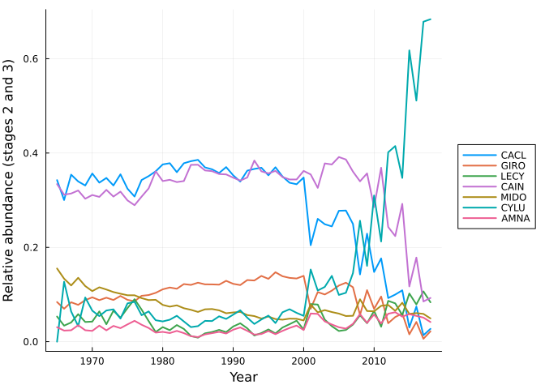
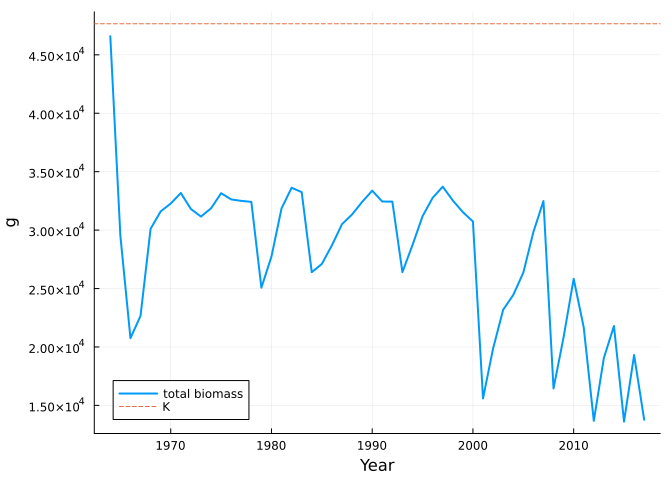
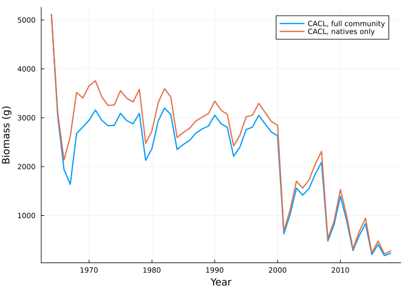

Verde River fish: a community linked by total biomass
Simon Frost
- The model
- Projection through the 1964-2017 flow record
- Agreement with the original R code
- What the pool does
- Asking a new question takes one line
- Reference
ENV["GKSwstype"] = "100"
using MatrixCommunityModels
using MatrixProjectionModels: lambda
using Plots, PrintfThe model
Rogosch et al. (2019) modelled seven fish species of the Verde River, Arizona: three natives (Catostomus clarkii CACL, Gila robusta GIRO, Catostomus insignis CAIN) and four non-natives (Lepomis cyanellus LECY, Micropterus dolomieu MIDO, Cyprinella lutrensis CYLU, Ameiurus natalis AMNA). Each species has three stages and its state is biomass in grams. Survival depends on the kind of year (spring flood, summer flood, medium flood, drought, or none of these). The species are linked by one dependency assumption: the fecundity of every species is multiplied by max(0, 1 - B/K), where B is the total biomass of all fish and K = 47,660 g.
verde_fish_model() builds this community from the published vital-rate tables. In src/models.jl each species is a projection net from CategoricalPopulationDynamics.jl with four named transitions; responses attached to those names say how each year type reduces growth and survival and how total biomass limits spawning; and one line says that every stage occupies the biomass pool gram for gram.
m = verde_fish_model()
fish = m.communityOpenCommunity(CACL, GIRO, LECY, CAIN, MIDO, CYLU, AMNA; pools = biomass)transition_names(system(fish)[:CYLU])4-element Vector{Symbol}:
:adult_growth
:adult_stasis
:juvenile_growth
:spawningProjection through the 1964-2017 flow record
Each year’s environment is its set of year-type flags.
m.years[1:3], m.envs[1:3]([1964, 1965, 1966], [(SP_highflood = 0, SU_highflood = 1, medflood = 0, drought = 0, nonevent = 0), (SP_highflood = 0, SU_highflood = 0, medflood = 1, drought = 0, nonevent = 0), (SP_highflood = 1, SU_highflood = 0, medflood = 0, drought = 0, nonevent = 0)])sol = project(fish, m.n0, m.envs)CommunityTrajectory(54 steps, 21 states)Rogosch et al. report relative abundance of the two older stages. Biomass converts to numbers through the individuals-per-gram of each stage.
adults = reduce(hcat, [sol[sp][:, 2] .* m.density[sp][2] .+ sol[sp][:, 3] .* m.density[sp][3]
for sp in species_names(fish)])
rel = adults ./ sum(adults; dims = 2)
yrs = [m.years; m.years[end] + 1]
plot(yrs[2:end], rel[2:end, :]; label = permutedims(String.(species_names(fish))),
xlabel = "Year", ylabel = "Relative abundance (stages 2 and 3)", lw = 2, legend = :outerright)
Agreement with the original R code
test/reference/fish_det_biomass.csv was produced by the authors’ R script, run with the same flow record and the initial biomass of the vital-rate table (see test/reference/R/run_fish_reference.R). Each of its rows is the state before that year’s update.
ref_file = joinpath(pkgdir(MatrixCommunityModels), "test", "reference", "fish_det_biomass.csv")
ref = permutedims(reduce(hcat, [parse.(Float64, split(l, ",")[2:end]) for l in readlines(ref_file)[2:end]]))
got = sol.u[1:54, :]
(identical = count(got .== ref), of = length(ref), max_abs_difference = maximum(abs.(got .- ref)))(identical = 1134, of = 1134, max_abs_difference = 0.0)All 1134 values (54 years, 21 states) are identical to the last bit.
What the pool does
Total biomass, the only thing the species share, stays below K:
plot(m.years, sol.pools[1:end-1, 1]; label = "total biomass", xlabel = "Year", ylabel = "g", lw = 2)
hline!([47660]; label = "K", ls = :dash)
Freezing a species at a year type and a biomass gives an ordinary MatrixProjectionModel, so the tools of MatrixProjectionModels.jl apply; here, its growth rate. Here each species alone in an almost empty river, by year type:
flags(; kw...) = merge((SP_highflood = 0, SU_highflood = 0, medflood = 0, drought = 0, nonevent = 0), kw)
types = ["spring flood" => flags(SP_highflood = 1), "summer flood" => flags(SU_highflood = 1),
"medium flood" => flags(medflood = 1), "drought" => flags(drought = 1),
"non-event" => flags(nonevent = 1)]
nobody = zeros(length(fish))
for sp in species_names(fish)
lams = [lambda(matrix_model(fish, sp, nobody, env)) for (_, env) in types]
@printf("%-5s %s\n", sp, join([@sprintf("%-13s %5.2f", first(t), l) for (t, l) in zip(types, lams)], " "))
endCACL spring flood 1.42 summer flood 1.30 medium flood 1.41 drought 0.59 non-event 1.30
GIRO spring flood 1.53 summer flood 1.37 medium flood 1.51 drought 0.67 non-event 1.37
LECY spring flood 1.31 summer flood 0.84 medium flood 1.31 drought 1.55 non-event 1.82
CAIN spring flood 1.34 summer flood 1.27 medium flood 1.34 drought 0.81 non-event 1.27
MIDO spring flood 1.25 summer flood 1.17 medium flood 1.25 drought 1.23 non-event 1.31
CYLU spring flood 1.47 summer flood 1.25 medium flood 1.47 drought 1.78 non-event 1.74
AMNA spring flood 1.20 summer flood 0.98 medium flood 1.20 drought 1.33 non-event 1.62The natives (CACL, GIRO, CAIN) do best after spring floods and decline in droughts; the non-natives do best in droughts and non-event years. That is the autecology the model was given. Competition appears only when the community is put together.
Asking a new question takes one line
Because the community is a composite, changing its membership is a matter of composing a different set of species. The natives without the non-natives:
natives = subcommunity(fish, :CACL, :GIRO, :CAIN)
n0 = [p for p in m.n0 if p.first in (:CACL, :GIRO, :CAIN)]
alone = project(natives, n0, m.envs)
plot(yrs, [sum(sol[:CACL]; dims = 2) sum(alone[:CACL]; dims = 2)];
label = ["CACL, full community" "CACL, natives only"], xlabel = "Year", ylabel = "Biomass (g)", lw = 2)
Reference
Rogosch, J. S., Tonkin, J. D., Lytle, D. A., Merritt, D. M., Reynolds, L. V. & Olden, J. D. (2019). Increasing drought favors nonnative fishes in a dryland river: evidence from a multispecies demographic model. Ecosphere 10, e02681. Code and data: https://doi.org/10.5281/zenodo.1309024 (MIT licence).